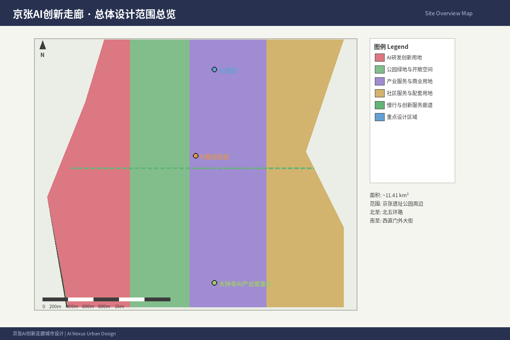
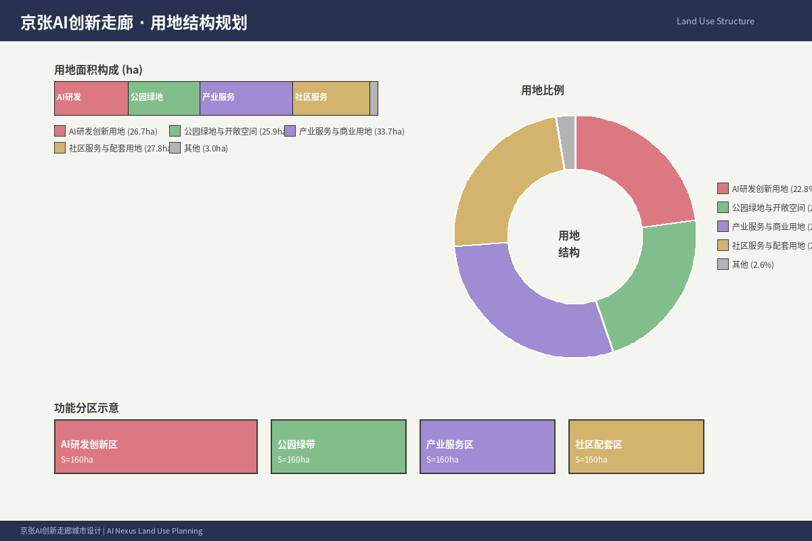
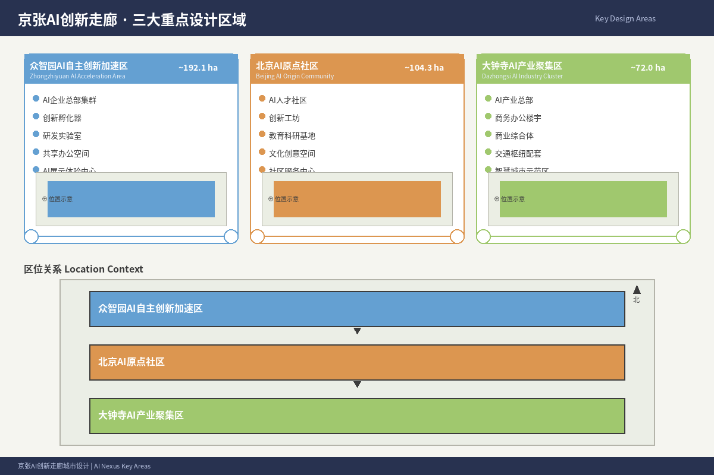

Jingzhang AI Nexus — Centennial Jing-Zhang AI Innovation Belt Urban Design Proposal
With 'Jingzhang AI Nexus' as the overarching concept, this proposal organizes the space around the Jing-Zhang Railway Heritage Park into 'One Belt, Three Cores, Multi-Scenario Nodes, Blue-Green Slow-Mobility Loop,' integrating a century of railway heritage, Zhongguancun innovation culture, and emerging AI culture to envision a future urban environment for AI talent, enterprises, and residents.
Jingzhang AI Nexus — Centennial Jing-Zhang AI Innovation Belt Urban Design Proposal
1. Design Basis and Source List
This proposal is primarily based on the "Centennial Jing-Zhang AI Innovation Belt International Urban Design Solicitation Pre-qualification Announcement" published by the Haidian Branch of the Beijing Municipal Commission of Planning and Natural Resources [$TRAE_REF](https://ghzrzyw.beijing.gov.cn/zhengwuxinxi/tzgg/hd/202605/t20260509_4643047.html), with the structured task book in brief/site-package/ as the machine-readable reference 来源 来源.
Core Source List:
| Source ID | Name | Publisher | Authority | Purpose |
|---|---|---|---|---|
| SRC-2026-BJ-GH-QUAL-PREANNOUNCEMENT | Pre-qualification Announcement | Beijing Planning Commission Haidian Branch | A0 (Official) | Project scope, design tasks, boundary descriptions |
| SRC-2026-BJ-KW-THREE-AREAS-WINGS | Three Areas Two Wings | Beijing Science Commission | A1 (Official) | Framework, industrial context |
| SRC-2026-HAIDIAN-1X1 | 1+X+1 Industrial System | Haidian District Government | A1 (Official) | Industrial positioning, AI core industry |
| SRC-2026-0518-AGENT-OPEN-CALL-TASKBOOK | Agent Open Call Taskbook | User-provided cleared | Cleared | Agent tasks 1-6, co-creation principles |
| SRC-PROVISIONAL-BOUNDARIES-2026 | Provisional Boundaries | Repository maintainers | provisional | Temporary generation, self-check |
| SRC-2017-MOHURD-URBAN-DESIGN-MEASURES | Urban Design Measures | MOHURD | A0 (Official) | Urban design depth, public space |
| SRC-MOHURD-CONTROL-DETAILED-PLANNING | Regulatory Planning Measures | MOHURD | A0 (Official) | Regulatory planning depth |
| SRC-2023-MNR-LAND-USE-CLASSIFICATION | Land Use Classification Guide | MNR | A0 (Official) | Land use classification |
| SRC-OSM-COPYRIGHT | OSM Copyright | OSM Foundation | Open data license | Base map data attribution |
This proposal uses provisional boundaries from brief/site-package/geometry/provisional_boundaries.geojson. All spatial conclusions are labeled provisional_constraint, official_boundary=false, for proposal generation, self-check, and design discussion only, not as official redline, approval basis, or precise area calculation.

2. Three-Level Scope Framework
The proposal organizes work in three tiers as defined by the announcement:
| Scope Level | Area | Boundary Description | Design Depth |
|---|---|---|---|
| Coordinated Research | 43.6 km² | N: North 5th Ring, E: Jingzang Expressway, S: Xizhimen Outer St, W: Wanquanhe Rd | Industrial ecology & strategy |
| Overall Design | 11.4 km² | 1-2km around Jing-Zhang Heritage Park | Urban renewal & regulatory depth |
| Key Detailed Design | 368.4 ha | Zhongzhiyuan, AI Origin Community, Dazhongsi | Detailed design depth |
Overall Concept: Jingzhang AI Nexus
The Jing-Zhang Railway Heritage Park serves as the historical and public space spine, with three key areas (Zhongzhiyuan — AI Origin Community — Dazhongsi) as innovation anchors, and universities, enterprises, communities, and transit stations as the daily network, forming "One Belt, Three Cores, Multi-Scenario Nodes, Blue-Green Slow-Mobility Loop."

3. Coordinated Research: Industry and Future City
3.1 Global AI Innovation Ecosystem Case Studies
| # | Case | Key Insight | Relevance to Haidian |
|---|---|---|---|
| 1 | Silicon Valley (USA) | University-capital-industry闭环 | Strengthen Zhongguancun capital-to-innovation pipeline |
| 2 | Kendall Square (Cambridge/Boston) | University-adjacent incubation | AI Origin Community as near-campus innovation hub |
| 3 | King's Cross (London) | Railway heritage renewal + knowledge economy | Jing-Zhang Heritage Park as innovation corridor |
| 4 | One-North (Singapore) | Integrated planning | Coordinate industry space with talent services |
| 5 | Nanshan (Shenzhen) | Market-driven cluster + policy | HQ cluster strategy for leading AI firms |
| 6 | Future Sci-Tech City (Hangzhou) | Platform-driven cluster | Attract AI platform companies |
| 7 | Marunouchi (Tokyo) | Historic district + modern business | Dazhongsi fusion of heritage and AI |
3.2 Haidian AI Innovation Ecosystem
Based on Haidian's "1+X+1" modern industrial system, this proposal establishes a "three-chain synergy" framework:
Innovation Chain: University research → Open-source collaboration → Enterprise transformation → Public experience → Global outreach
Industry Chain: Basic research → Computing power → Model development → Application → Industrial services
Talent Chain: University education → Entrepreneurship → Enterprise growth → Community life → International exchange
3.3 Naming and Visual Identity
Primary Name: Jingzhang AI Nexus (京张智脉 Nexus)
Logo Direction: Two parallel lines (symbolizing railway tracks) converging at a distant point (symbolizing AI future), forming an abstract variation of the "∞" infinity symbol, representing history leading to an infinite future.
4. Overall Design: Urban Renewal and Regulatory Depth
4.1 Spatial Structure
Three functional belts:
- West: University Innovation Belt (Tsinghua, PKU, BUAA, BUPT)
- Central: Jing-Zhang Heritage Park Vitality Belt (public space, culture, AI)
- East: Industry Services & Living Belt (Zhongguancun East, Xueyuan Road)
4.2 Land Use Plan
| Land Use Type | Area (ha) | Share (%) | Description |
|---|---|---|---|
| R&D/Industry | 285 | 25.0 | AI HQ, R&D centers, incubators |
| Commercial | 114 | 10.0 | Retail, AI experience, lifestyle |
| Residential | 228 | 20.0 | Talent apartments, international community |
| Education/Research | 171 | 15.0 | Universities, research institutes, AI academy |
| Green/Plaza | 148 | 13.0 | Heritage park, community parks, pocket parks |
| Transport | 137 | 12.0 | Roads, transit, slow mobility |
| Public Services | 57 | 5.0 | Healthcare, education, culture, sports |
| Total | 1140 | 100 | Based on provisional boundary |
5. Key Area Detailed Design
5.1 Zhongzhiyuan AI Acceleration Area (192.1 ha)
AI safety sandbox, Qinghe AI innovation corridor, full-stack innovation path, low-carbon computing experience center.
5.2 Beijing AI Origin Community (104.3 ha)
Open-source hub, near-campus translation street, talent services, 24h collaboration spaces,成果发布演播厅.
5.3 Dazhongsi AI Industry Cluster (72.0 ha)
TOD development, international roadshow hall, data element lounge, AI content consumption experience zone.

6. AI Ecosystem, Personas, and Scenarios
6.1 User Personas (6 types)
Open-source developers, startup teams, enterprise AI teams, residents, university faculty/students, international visitors.
6.2 AI Scenario Cards (15+)
SC01-SC15 covering: open-source publishing, safety sandbox, edge computing, AI navigation, international roadshow, Qinghe AI lounge, near-campus incubation, data elements, AI lifestyle street, global AI week route, robot delivery corridor, autonomous shuttle, AI health station, AI education space, citizen AI governance platform.
6.3 AI Testing Scenarios (3+)
- Autonomous model sandbox (Zhongzhiyuan)
- Low-speed unmanned delivery (Xiaoyuehe Wing)
- Open-road autonomous shuttle (Heritage Park corridor)
7. Land Use, Building Scale, and Retention/Renovation/Demolition
Land use classification follows the national land use classification guide. Building scale: approximately 18-22 million m² total GFA, FAR 1.5-2.5 overall, up to 3.0-4.0 in key areas (pending official regulatory plan confirmation).
8. Transportation, Transit, Municipal Infrastructure
TOD at Qinghuayuan, Wudaokou, and Dazhongsi stations. 12 east-west slow-mobility crossings. 9km north-south pedestrian and cycling path along the Heritage Park. Distributed edge computing nodes, solar + geothermal energy, smart light poles, AI public service nodes.
9. Blue-Green Space, Public Space, and Urban Identity
9.1 Blue-Green System
"One Belt, Two Rivers, Multiple Parks" — Jing-Zhang Heritage Park (9km, 30-150m wide), Qinghe and Xiaoyuehe ecological corridors, community parks totaling ~148ha.
9.2 AI Landmarks (4+)
1. Jing-Zhang AI Milestone Plaza (Qinghuayuan Station) 2. Developer Promenade (Heritage Park) 3. Agent Contribution Wall (AI Origin Community) 4. AI Exhibition Corridor (Zhongzhiyuan)
9.3 Cultural Narrative
Three-layer narrative: Railway history (1905-1909) → Zhongguancun innovation (1980s-2020s) → AI future culture (2026-). Cultural tour route: 6km with 12 interpretation nodes.
10. Renewal Projects, Implementation, and Phasing
10 renewal projects spanning public space, cultural landmarks, urban renewal, transit integration, and AI infrastructure. Three phases: Near-term (2026-2028), Medium-term (2028-2030), Long-term (2030-2035). Annual Jing-Zhang AI Innovation Week, quarterly AI Scene Open Days, monthly open-source community meetups.
11. Metrics, Area Recalculation, and Compliance Matrix
| Metric | Value | Unit | Status | Source |
|---|---|---|---|---|
| Overall design area | 11,412,825 | m² | known | geometry/site_boundary.geojson |
| Key areas total | 3,684,000 | m² | known | geometry/key_areas.geojson |
| Green space area | 1,480,000 | m² | known | geometry/green_space.geojson |
| Green ratio | 13.0% | ratio | known | metrics.json |
| Public space area | 836,000 | m² | known | geometry/public_space.geojson |
| Public space ratio | 7.3% | ratio | known | metrics.json |
| Building footprint | 310,807 | m² | known | geometry/buildings.geojson |
| FAR | 1.5-2.5 | ratio | unknown | Pending official plan |
| Key areas count | 3 | count | known | geometry/key_areas.geojson |
| AI scenario cards | 15 | cards | known | This proposal |
| User personas | 6 | types | known | This proposal |
| Renewal projects | 10 | items | known | Chapter 10 |
| AI landmarks | 4 | landmarks | known | Chapter 9 |
12. Risk, Copyright, and Compliance
12.1 Risk Matrix
| Risk Category | Description | Level (1-5) | Mitigation |
|---|---|---|---|
| Data privacy | Personal data collection in AI scenarios | 3 | Data minimization, consent, human review |
| Implementation complexity | Multi-stakeholder coordination | 4 | Phased implementation, pilot-first |
| Public acceptance | Public perception of AI | 3 | Public participation, transparent communication |
| Policy uncertainty | AI regulation changes | 3 | Modular design, regulatory compatibility |
| Technical maturity | Some AI scenarios not yet mature | 3 | Labeled as conceptual, pending validation |
| Spatial disputes | Urban renewal property rights | 4 | Open negotiation, compensation, phasing |
| O&M costs | Long-term operations | 3 | Diversified funding, public-private partnerships |
12.2 Compliance Statement
- All spatial recommendations are conceptual proposals, not formal planning conclusions
- All images, drawings, and data sources are documented in sources.json and copyright_statement.md
- No non-public planning materials, spatial data, internal control indicators, or personal privacy information are claimed or used
- No fabricated enterprise lists, investment amounts, production values, or fiscal commitments
- OSM base map data used under ODbL license
13. References
- brief/public-brief.md, brief/site-package/design_brief.json, agent_taskbook.json, allowed_design_space.json, sources.json
- data/source_registry.json, data/processed/agent_fact_pack.md
- docs/formal-submission-guide.md, visual-style-recommendations.md, terminology-glossary.md
- Full machine index: sources.json, metrics.json, compliance_matrix.json, standard_matrix.json, design_depth_matrix.json